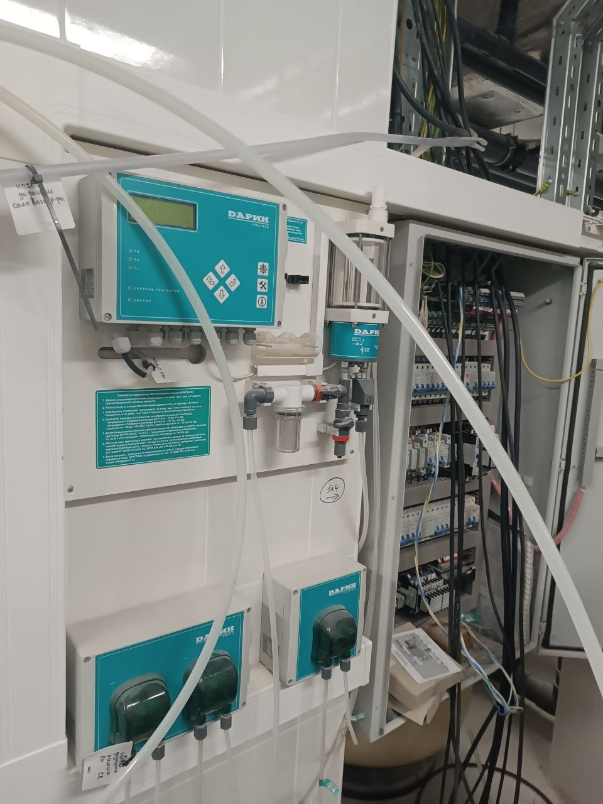

Введение
Автоматическая станция дозирования для бассейна: как выбрать и проверить
Автоматическая станция измеряет выбранные параметры воды и по заданным настройкам управляет дозирующими устройствами. Она помогает поддерживать повторяемый режим обработки, но не отменяет контроль проб, обслуживание датчиков и наблюдение за бассейном.
Состав системы зависит от метода дезинфекции и модели станции: контроллер, датчики, проточная измерительная ячейка, насосы-дозаторы и узлы ввода реагентов могут отличаться. Не каждая установка измеряет один и тот же набор параметров.
Перед выбором определяют, что именно нужно измерять, каким способом подавать реагент и как остановить дозирование при отсутствии потока или другой неисправности. Конкретные защиты проверяют в документации оборудования.
Станция не объясняет сама по себе, почему изменились показания. На результат влияют циркуляция, состояние фильтра, температура, загрязнение, свежая подпитка и свойства исходной воды.
Поэтому автоматическое управление не является заменой механической фильтрации. Фильтр удаляет взвешенные частицы, а станция управляет химической обработкой в пределах предусмотренных датчиков и исполнительных устройств.
pH и дезинфекция — связанные, но разные задачи. Контроллер pH не обязательно измеряет остаточный дезинфектант; функция и датчик зависят от модели и комплектации.
ORP (ОВП) — измерение окислительно-восстановительного потенциала, а не прямое измерение концентрации свободного хлора. На показание влияют условия воды и калибровка, поэтому эти величины нельзя считать взаимозаменяемыми.
Автоматическое дозирование не гарантирует неизменный расход реагентов и не устраняет причину запаха, раздражения или помутнения. Такие симптомы требуют проверки воды и режима обработки, а не увеличения подачи «на глаз».
Выбор оборудования начинают с перечня контролируемых параметров и совместимых реагентов, затем проверяют диапазоны измерения, точность, производительность и допустимое противодавление насоса-дозатора по паспорту.
Для существующего бассейна дополнительно проверяют доступную точку отбора пробы, место ввода реагента, режим работы циркуляции и возможность безопасно обслуживать узел.
Нужно заранее определить, какие действия останутся владельцу: отбор проб, визуальная проверка, пополнение реагентов и обслуживание. Автоматика не делает систему полностью автономной.
Статья посвящена именно измерению и дозированию. Общие основы циркуляции и фильтрации разобраны в отдельной статье о фильтрации воды в бассейне.

Оглавление
Что разберем в статье
Выберите нужную часть: принцип измерения и управления, состав системы, ограничения автоматизации, внедрение, ошибки и ответы на частые вопросы.
- Фильтрация воды для бассейна — базовая статья о насосах, фильтрах и обороте воды.
- Баланс pH воды в бассейне — как pH влияет на комфорт, реагенты и ресурс оборудования.
- Обслуживание бассейна — регламент регулярного сервиса частной чаши.
- Автоматизация бассейна — сценарии управления инженерией, светом и водоподготовкой.
- Бассейн без хлора — что реально означает мягкая водоподготовка и какие ограничения важно учитывать.
Принцип работы
Что измеряет и чем управляет станция
В типовой системе контроллер получает сигнал от подключённого датчика и сравнивает его с заданием. Если автоматика поддерживает регулирование выбранного параметра, контроллер включает или изменяет работу соответствующего исполнительного устройства.
Измерительный канал и насос-дозатор — разные части. Датчик сообщает контроллеру значение в точке отбора; насос подаёт реагент из ёмкости через дозирующую линию. Комплект и алгоритм управления проверяют по паспорту конкретной системы.
Для обработки воды могут использоваться измерение pH и измерение показателя, связанного с дезинфекцией. Набор датчиков нельзя считать одинаковым у всех устройств; в частности, ORP не является прямым анализом концентрации хлора.
Чем измерение отличается от дозирования
Наличие реле или датчика потока может блокировать дозирование при остановке циркуляции, но это не универсальная функция каждой модели. Проверьте, как именно реализована блокировка и какие аварийные условия контроллер распознаёт.
Пробу обычно проводят через предусмотренную изготовителем измерительную арматуру. Требуемые расход и давление в измерительной линии, порядок установки датчиков и время стабилизации сверяют с руководством.
Где отбирать пробу
Пробу отбирают из предусмотренной измерительной линии при расходе и давлении, указанных в документации станции. Если вода в точке отбора застаивается или плохо перемешивается, показания могут не представлять циркуляционный контур; место отбора сверяют со схемой и руководством изготовителя.
Точку ввода реагента выбирают по схеме и ограничениям производителя; совместимость реагента с материалами установки проверяют по паспортам.
Как согласовать точку ввода реагента
После точки ввода реагент должен смешаться с потоком до следующего измерения. Время и условия зависят от схемы и расхода, поэтому универсальный интервал не указывают; сверяйте размещение узлов и требования к монтажу с документацией выбранной станции.
Состав датчиков, насосов, алгоритмов и сигнализации зависит от модели. Сравнивайте функции по спецификациям, а не только по названию «автоматическая станция».
Какие функции зависят от модели
Некоторые системы допускают внешние насосы или интеграцию с общей автоматикой, другие рассчитаны на собственные компоненты. Совместимость сигналов, реагентов и узлов подключения должна быть подтверждена документацией.
Управление по ORP удобно рассматривать как контрольный сигнал, а не замену лабораторного или ручного определения нужного показателя. Настройку проводят по применяемому методу обработки и подтверждают измерениями.
Что автоматика не делает
Автоматика не исправляет ошибки водообмена, загрязнённый фильтр, неверно выбранный реагент или неправильные действия оператора. Сначала выявляют источник проблемы, затем меняют настройки.
Если показания резко расходятся с контрольным измерением, дозирование следует проверять безопасным способом по руководству производителя, включая состояние датчика и линий, а не компенсировать расхождение произвольным повышением подачи.
Подбор
Как выбрать станцию под задачу бассейна
Начните с перечня задач: какой метод дезинфекции применяется, какие параметры требуется контролировать и кто будет выполнять плановые проверки. Не выбирайте прибор только по числу функций.
Сверьте диапазоны измерения, требования к калибровке, тип датчиков, допустимые условия работы и совместимость с применяемыми реагентами. Эти значения берут из паспорта выбранной модели.
Производительность дозирующего насоса сама по себе не определяет точность регулирования. Проверяют диапазон подачи, рабочее противодавление, режим управления и соответствие фактической схеме.
Параметры измерения и дозирования
Уточните, какие защитные блокировки предусмотрены: например, что происходит при отсутствии циркуляционного потока, аварийном сигнале или достижении заданного ограничения дозы. Перечень функций зависит от оборудования.
- какие параметры действительно измеряет система;
- какой насос и диапазон подачи предусмотрены;
- есть ли блокировка дозирования без подтверждённого потока;
- какие реагенты и материалы разрешены изготовителем;
- что входит в комплект, монтаж и пусконаладку.
Проверьте, входят ли в поставку датчики, проточная ячейка, арматура, линии и узлы ввода либо приобретаются отдельно. Сравнивайте одинаковый состав и монтажные работы.
Ограничения установки и совместимость
Система должна быть совместима с материалами труб, арматуры и чаши, а также с применяемой химией. Совместимость подтверждают инструкции на каждый компонент и проектная схема.
Проверьте, можно ли безопасно снять и обслужить датчик, заменить расходные детали и увидеть индикацию. Доступ к узлу — часть условий регулярного обслуживания, а не декоративная опция.
Что учесть в обслуживании
Калибровку, очистку электродов и замену компонентов выполняют с периодичностью и способом из руководства конкретной модели. Универсальный график обслуживания без модели указывать нельзя.
Сравнивайте стоимость комплекта, необходимых расходных компонентов, сервиса и возможных внешних устройств. Без состава системы и данных поставщика корректные цены или стоимость владения не рассчитать.
Для предварительного подбора подготовьте объём и назначение бассейна, метод дезинфекции, циркуляционную схему, выбранные реагенты, желаемые измеряемые параметры и доступные паспорта существующего оборудования.
Как сравнить комплектации
Для уже работающего бассейна приложите схему или фотографии узлов и опишите текущий симптом. Фотография помогает увидеть компоновку, но не заменяет измерение воды и обследование.
Если важна интеграция с удалённым управлением, выясните протокол связи, совместимые устройства и перечень доступных команд. Функция интеграции не означает автоматически, что все параметры доступны для управления.
Оставьте в сравнительной таблице отдельные строки для контроллера, датчиков, насосов, пробоотборной части, реагентов, защит, монтажа, настройки и обучения владельца.
Какие данные нужны для подбора
Для запроса укажите назначение и объём бассейна, применяемый метод обеззараживания, измеряемые параметры, режим работы и модели уже установленного оборудования. Для модернизации приложите схему и доступные результаты контрольных измерений. Диапазоны датчиков, реагенты и состав станции сверяйте с паспортом выбранной модели.
Сравнение
Что меняется при переходе с ручного контроля на автоматику
| Решение | Сильная сторона | Ограничение |
|---|---|---|
| Ручное дозирование | Минимальный состав оборудования | Требует самостоятельных регулярных измерений и внесения реагента |
| Полуавтоматическая подача | Упрощает подачу выбранного реагента | Не обязательно измеряет параметр или регулирует дозу автоматически |
| Автоматическая станция | Может управлять подачей по сигналам подключённых датчиков | Требует совместимой схемы, настройки и обслуживания |
При ручном режиме владелец сам измеряет воду, принимает решение и добавляет реагент по инструкции. Станция автоматизирует часть измерения и подачи, но только для подключённых параметров и в заданных пределах.
Автоматизация может сделать дозирование более регулярным, однако результат всё равно зависит от корректных проб, исправных датчиков, циркуляции и контрольных измерений. Она не гарантирует сокращение расхода реагента или полное отсутствие обслуживания.
Пошаговая инструкция
Как подготовить автоматическое дозирование к работе
До выбора оборудования запишите тип бассейна, метод дезинфекции, схему циркуляции, режим работы и модели уже установленного оборудования. Для модернизации отметьте известные проблемы и результаты измерений.
1. Зафиксировать исходную схему
Согласуйте, какие величины станция измеряет непосредственно, а какие только косвенно оценивает. Не заменяйте анализ воды показанием ORP или настройкой контроллера.
2. Выбрать измеряемые параметры
Определите точки отбора пробы и ввода реагента по гидравлической схеме и руководству оборудования. Их расположение должно обеспечивать репрезентативную пробу и корректное смешение.
3. Проверить точки отбора и ввода
Проверьте допустимые давления и расходы, типы датчиков и реагентов, соединения, расходные материалы и предусмотренные блокировки. Не переносите параметры одного аппарата на другую модель.
4. Сверить комплектацию с паспортом
Монтаж, калибровку, настройку и проверку защит выполняет квалифицированный специалист по инструкциям применяемых компонентов. Исходные настройки и контрольные измерения фиксируют.
5. Настроить и передать систему
После запуска проверьте, что измерительный контур получает пробу, контроллер видит датчики, насосы работают в предусмотренном режиме, а блокировка дозирования выполняется при заданном условии.
Пусконаладка: что проверить
Владельцу передают инструкцию: какие показания контролировать, как проводить контрольное измерение, когда пополнять реагенты и при каких аварийных сигналах прекращать эксплуатацию и обращаться к специалисту.
Не следует оставлять установку без проверки только потому, что на дисплее нет аварии. Отсутствие сигнала не подтверждает правильность измерения или химический состав воды.
Передача регламента владельцу
При передаче запишите модели станции, датчиков и реагентов, заданные настройки, способ контрольного измерения и сигналы, при которых работу прекращают. Периодичность обслуживания и калибровки берите из руководства производителя и уточняйте по условиям эксплуатации.
Запишите модель станции, датчиков и реагентов, даты калибровки и выполненные настройки. Эти сведения упростят обслуживание и поиск отклонения.
Ошибки
Ошибки при выборе и эксплуатации станции
Мутность, запах, раздражение и налёт имеют разные возможные причины. Не меняйте подачу реагента, пока не проверены показания, фильтрация, циркуляция и инструкция применяемого метода.
Не проверять место и режим отбора пробы
ORP — показатель окислительно-восстановительного потенциала. Он не равен концентрации свободного хлора и не заменяет соответствующий метод измерения.
Подключить реагент без проверки совместимости
Если изготовитель предусмотрел блокировку по потоку, проверьте её работу и правильность подключения. Не считайте наличие насоса циркуляции подтверждением фактического расхода воды через узел.
Менять дозу без контрольного измерения
Некорректная проба или неподходящее место датчика может приводить к управляющим решениям по нерепрезентативному значению. Схему проверяют по инструкции и гидравлике.
Не обслуживать датчики
Реагенты могут предъявлять разные требования к материалам, насосу и точке ввода. Нельзя смешивать концентраты или применять химикат не по назначению.
Как проверить расхождение показаний
Автоматическое регулирование не отменяет периодических контрольных измерений и обслуживания. Игнорирование этих процедур может оставить ошибочные показания незамеченными.
Показания сверяют с независимым подходящим методом. При заметном расхождении проверяют датчик, его состояние, калибровку, пробоотборную линию и режим циркуляции.
Что нельзя компенсировать настройкой станции
Не меняйте одновременно несколько настроек и не увеличивайте дозу без подтверждённой причины. После корректировки оценивают результат способом, указанным для выбранного метода.
Плановые очистку, калибровку и замену датчиков выполняют по документации. Высохший, загрязнённый или повреждённый электрод может давать недостоверный сигнал.
Решения
Практические границы решения
Сначала определяют метод водоподготовки и измеряемые параметры, затем подбирают совместимые датчики, контроллер и дозирующее оборудование. Проект должен показывать их связь с циркуляционным контуром.
Согласовать задачу и ограничения
При пуске подтверждают корректность измерительного контура, работы дозирующих линий и предусмотренных блокировок, после чего фиксируют настройки и контрольные показания.
Проверить совместимость компонентов
Для нового бассейна точки отбора и ввода согласуют на этапе проектирования с остальной гидравлической схемой. Конкретное решение зависит от устройства контура.
Передать понятный порядок контроля
Для уже действующего бассейна сначала обследуют доступную схему и проверяют, подходит ли она для установки измерительной ячейки и реагентных линий. Если нет, могут понадобиться проектные изменения.
Для нового и действующего бассейна
Статья о балансе pH объясняет отдельный химический параметр; устройство циркуляции разобрано в материале о фильтрации и циркуляции.
Подробные функции управления несколькими инженерными системами относятся к статье об автоматизации бассейна. Здесь рассматривается узкая задача измерения и дозирования реагентов.
CTA
Нужна консультация по подбору?
Оставьте заявку: оценим объем чаши, техническое помещение, текущую химию для бассейна, автоматику и предложим решение с понятной сметой.
FAQ
FAQ — ответы на частые вопросы
Можно ли установить станцию на существующий бассейн?
Это зависит от циркуляционной схемы, доступного места для отбора пробы и ввода реагента, совместимости оборудования и возможности безопасного обслуживания. Сначала проверяют существующий узел и инструкции выбранной станции.
Сначала оценивают, нужны ли изменения трубопроводов и где можно установить измерительную ячейку и дозирующие линии. Подключение без проверки схемы может привести к некорректной пробе или несовместимости материалов.
Какие параметры контролирует станция?
Набор функций зависит от модели: станция может контролировать pH, ORP или другие параметры в предусмотренной комплектации. ORP не является прямым измерением концентрации свободного хлора.
Перед покупкой сравните паспорт датчика и контроллера: именно они определяют, что измеряется и как значение используется для управления. Отдельные методы проверки воды остаются необходимыми.
Снижает ли станция расход химии?
Автоматика не гарантирует уменьшения расхода. Потребление зависит от условий эксплуатации, качества воды, нагрузки, выбранного метода обработки и настройки оборудования.
Дозирование по измерениям может сделать подачу более повторяемой, но не означает, что реагента всегда потребуется меньше. Сравнивать расход можно только по сопоставимым условиям и фактическим данным.
Нужен ли специалист для обслуживания?
Владельцу нужно выполнять контрольные измерения, визуальные проверки и действия, указанные в руководстве. Для настройки, обслуживания датчиков и работ с реагентами может требоваться специалист.
Простые проверки и пополнение реагентов иногда доступны владельцу, но калибровку, очистку и замену компонентов проводят по инструкции конкретной модели и с соблюдением требований безопасности.
От чего зависит стоимость системы?
Стоимость зависит от состава контроллера, датчиков, насосов и арматуры, интеграции, монтажа и пусконаладки. Без конкретной комплектации и актуальных предложений цену указывать нельзя.
При сравнении предложений запросите одинаковый перечень компонентов и работ, а также стоимость необходимых расходных частей и обслуживания, если поставщик предоставляет такие данные.